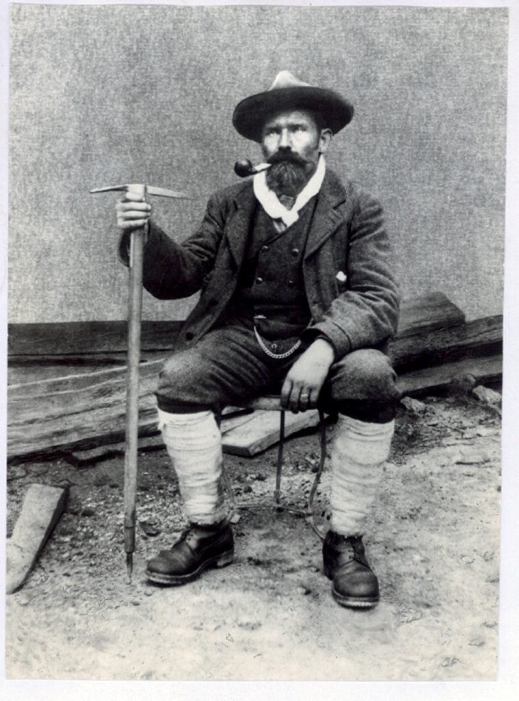
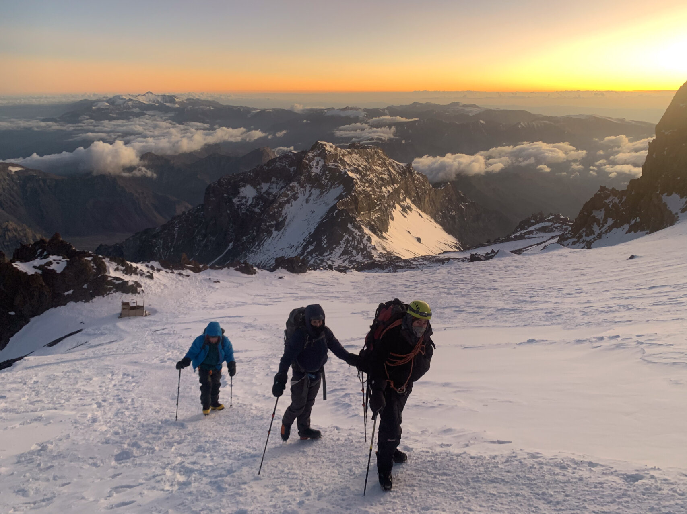
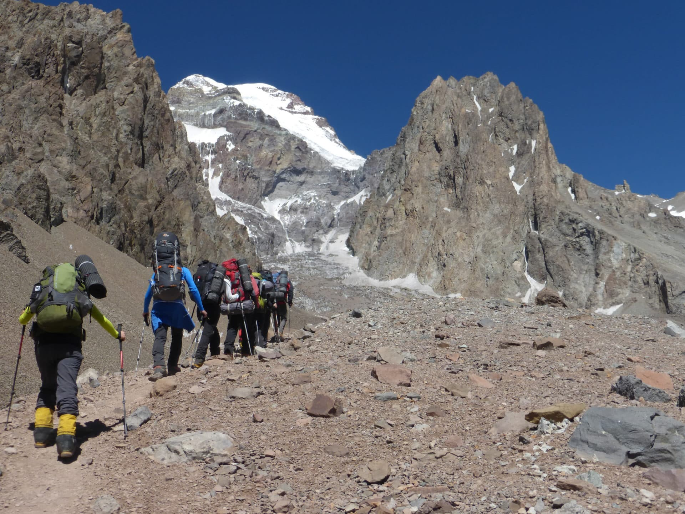
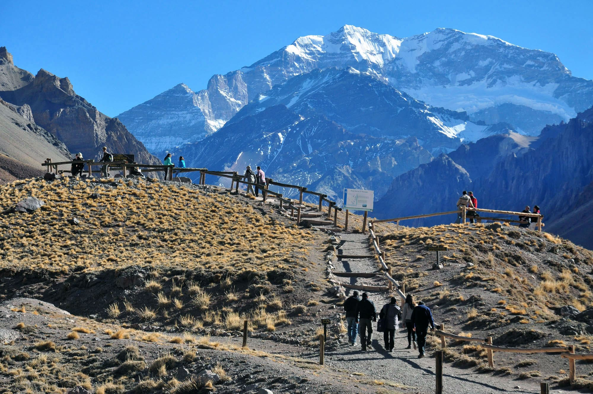
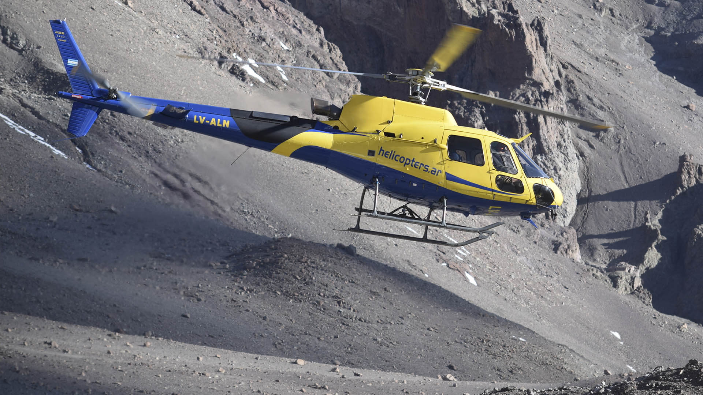
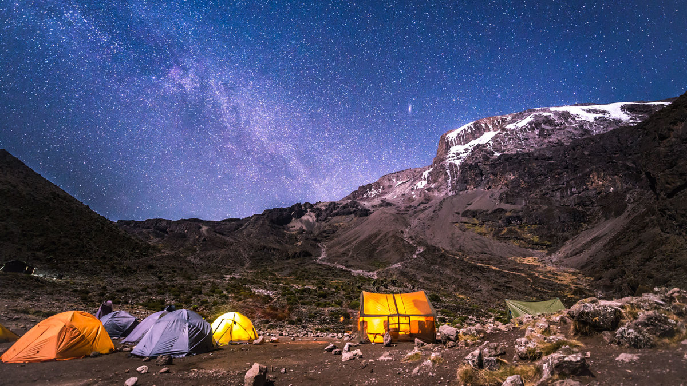

First summited in 1897 by Matthias Zurbriggen.
Experince Mountaineering on Aconcagua

At 6,961 meters, it is the highest peak in both the Western and Southern Hemispheres.
Speaking of physics, Aconcagua is a massive 'tectonic uplift.' Since it’s 6,961 meters high, there is only about 40% of the oxygen at the summit compared to sea level. That’s a serious physiological challenge!
It’s a "Non-Volcanic" mountain. Unlike most Andes peaks, it’s a giant slab of sedimentary rock pushed up by the Nazca plate sliding under the South American plate.
What to Expect
High-altitude desert conditions, extreme cold, and the ultimate bragging rights of climbing the "Colossus of America.
The "Full Summit Expedition"

A meticulously planned 18-to-20-day assault on the highest point in the Southern and Western Hemispheres.
This is a study in Human Physiology vs. Hypoxia. You aren't just climbing; you are managing a complex "acclimatization schedule." You move gear up to a high camp, then sleep back down at a lower camp—a process known as "climb high, sleep low" to trigger the production of more red blood cells!
Advertisements highlight "Mule Logistics" (carrying your 35kg of gear to Base Camp) and "Professional IFMGA Guides" who monitor your oxygen saturation levels with pulse oximeters daily.
The "Plaza Francia" Base Camp

A 3-to-4-day "short" trek for those who want the view without the 7,000 meter risk.
You reach the base of the South Face—a vertical 3,000 meter wall of ice and rock. It is one of the most legendary "big walls" in the world.
Most ads focus on "Base Camp Life." You get to stay in geodesic domes at Confluencia, eat authentic Argentine asado prepared by mountain chefs, and watch avalanches safely from a distance through high-powered binoculars.
The "Helicopter Exit"

Why walk 18 miles back to the park gate when you can fly?
Experience the physics of high-altitude flight. Helicopters at these altitudes have to deal with incredibly "thin" air, meaning the rotors have to spin faster to create lift.
Advertisements pitch this as the "Executive Finish." After two weeks of freezing in a tent, you can be back in a Mendoza five-star hotel with a glass of Malbec in under 20 minutes.
The "Mendoza Basecamp" Day Tour

A 12-hour high-speed loop from Mendoza city.
You visit the Puente del Inca, a natural bridge formed by thermal sulfur springs that "petrified" a colonial bridge in bright orange minerals.
You’ll hike to the Horcones Lagoon (2,950m), where the water is so pure it hosts a specific species of Andean toad that acts as a biological indicator for environmental health.
Pre-Checklist
Atmospheric Pressure: At the summit, the pressure is about 40% of what it is at sea level. Your lungs have to work 2.5 times harder just to stay equalized!
The "Canaleta" Physics: The final 300 meters is a "two steps forward, one step back" treadmill of loose rocks at a 35° incline. It’s the ultimate test of kinetic energy management.
Summit day often involves temperatures of 30°C. Advertisements will insist on "Triple Boots"—layers of insulation, plastic, and high-tech synthetic shells.